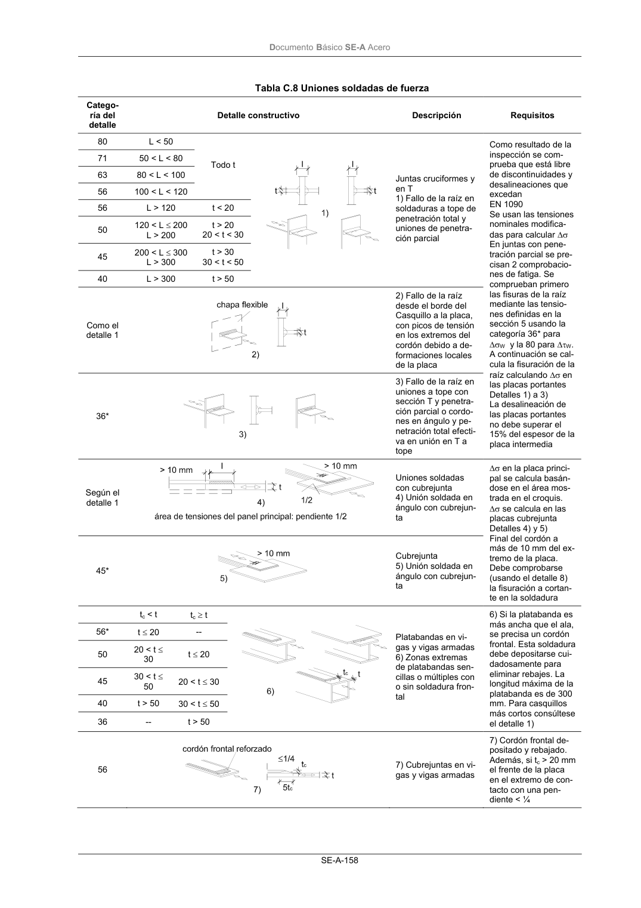

DB-SE-A · Página 160 · versión 2007-10-23
SHA256: 9ed9ea694aabfbda3bfbbef40dfe9223fde05d13c35bc2ba9751e5a96a22a64f · página física 160 de 168 · métodos de encabezado
solo si están cotejados.
Documento · ← p. 159 · p. 161 →
Formatos: Markdown · JSON de bloques · PDF p. 160 · imagen PNG
Documento Básico SE-A Acero SE-A-158 Tabla C.8 Uniones soldadas de fuerza Catego- ría del detalle Detalle constructivo Descripción Requisitos 80 L < 50 71 50 < L < 80 63 80 < L < 100 56 100 < L < 120 Todo t 56 L > 120 t < 20 50 120 < L ≤ 200 L > 200 t > 20 20 < t < 30 45 200 < L ≤ 300 L > 300 t > 30 30 < t < 50 40 L > 300 t > 50 Juntas cruciformes y en T 1) Fallo de la raíz en soldaduras a tope de penetración total y uniones de penetra- ción parcial Como el detalle 1 2) Fallo de la raíz desde el borde del Casquillo a la placa, con picos de tensión en los extremos del cordón debido a de- formaciones locales de la placa 36* 3) Fallo de la raíz en uniones a tope con sección T y penetra- ción parcial o cordo- nes en ángulo y pe- netración total efecti- va en unión en T a tope Como resultado de la inspección se com- prueba que está libre de discontinuidades y desalineaciones que excedan EN 1090 Se usan las tensiones nominales modifica- das para calcular ∆σ En juntas con pene- tración parcial se pre- cisan 2 comprobacio- nes de fatiga. Se comprueban primero las fisuras de la raíz mediante las tensio- nes definidas en la sección 5 usando la categoría 36* para ∆σW y la 80 para ∆τW. A continuación se cal- cula la fisuración de la raíz calculando ∆σ en las placas portantes Detalles 1) a 3) La desalineación de las placas portantes no debe superar el 15% del espesor de la placa intermedia Según el detalle 1 Uniones soldadas con cubrejunta 4) Unión soldada en ángulo con cubrejun- ta 45* Cubrejunta 5) Unión soldada en ángulo con cubrejun- ta ∆σ en la placa princi- pal se calcula basán- dose en el área mos- trada en el croquis. ∆σ se calcula en las placas cubrejunta Detalles 4) y 5) Final del cordón a más de 10 mm del ex- tremo de la placa. Debe comprobarse (usando el detalle 8) la fisuración a cortan- te en la soldadura tc < t tc ≥ t 56* t ≤ 20 -- 50 20 < t ≤ 30 t ≤ 20 45 30 < t ≤ 50 20 < t ≤ 30 40 t > 50 30 < t ≤ 50 36 -- t > 50 Platabandas en vi- gas y vigas armadas 6) Zonas extremas de platabandas sen- cillas o múltiples con o sin soldadura fron- tal 6) Si la platabanda es más ancha que el ala, se precisa un cordón frontal. Esta soldadura debe depositarse cui- dadosamente para eliminar rebajes. La longitud máxima de la platabanda es de 300 mm. Para casquillos más cortos consúltese el detalle 1) 56 7) Cubrejuntas en vi- gas y vigas armadas 7) Cordón frontal de- positado y rebajado. Además, si tc > 20 mm el frente de la placa en el extremo de con- tacto con una pen- diente < ¼
